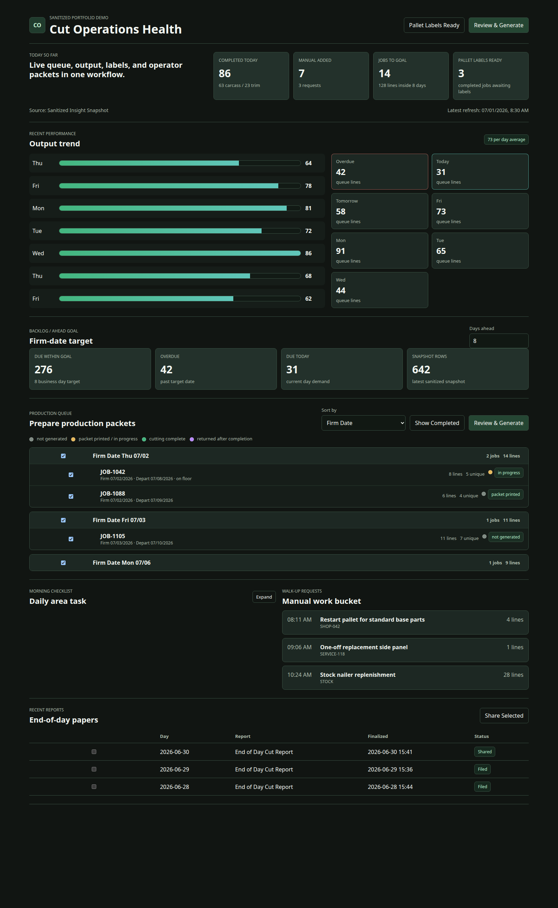
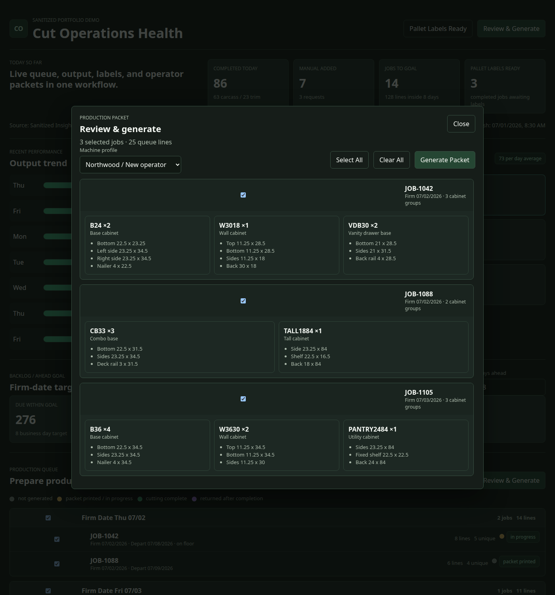
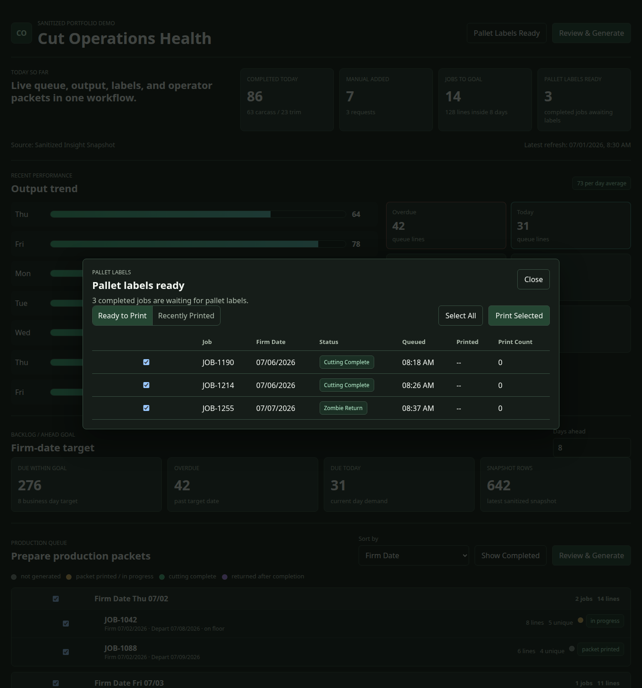
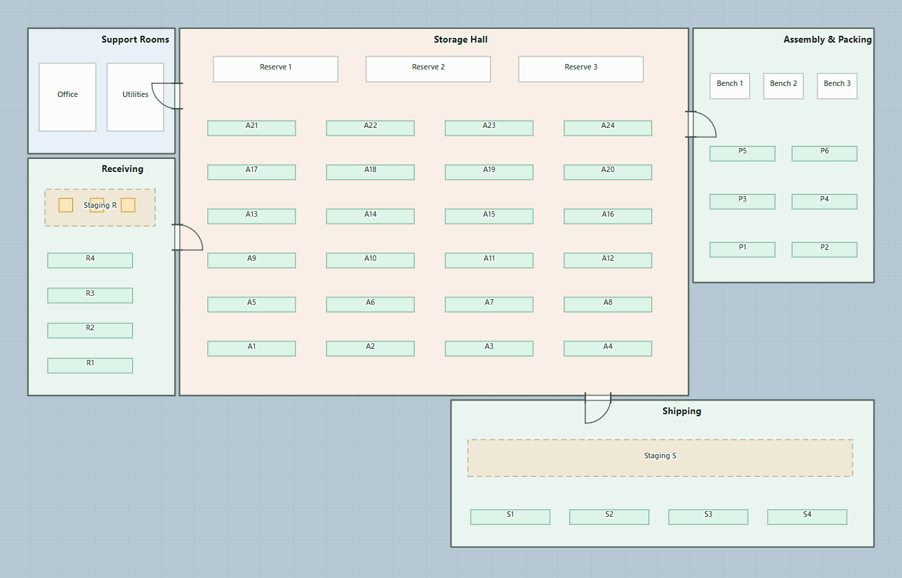
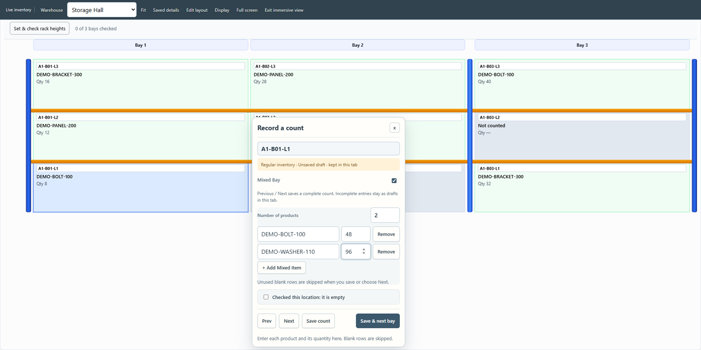
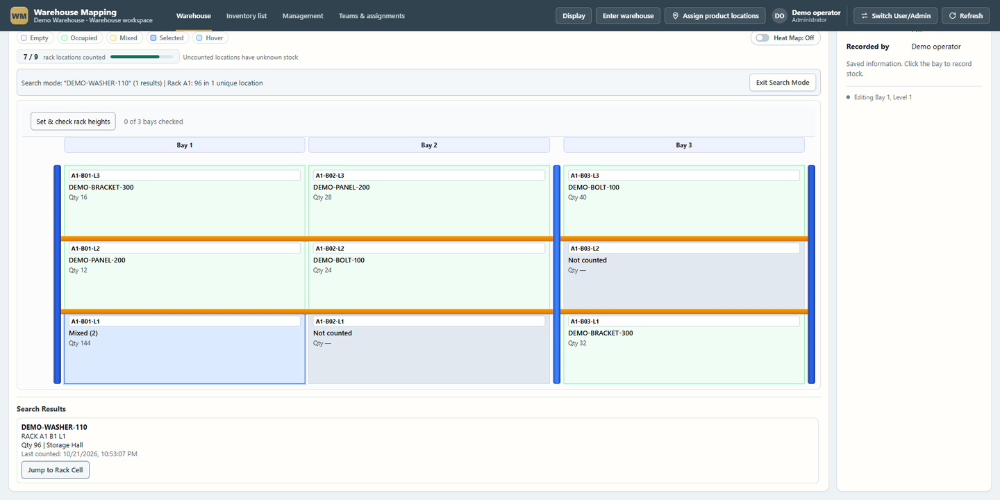

Prepare the work
Orders become explicit cabinet and component requirements before anything is released to a machine.

Manufacturing software · CNC · production operations
A connected set of tools that prepares production work, carries it to the station, records what happened, and helps people find what comes next.
Built to work beside an existing ERP and machine controllers. People still release the work, operate the machines, and make the decisions.
Follow a production day ↓One connected production story
Follow the information as it becomes manufacturing requirements, machine-ready work, station records, and operational visibility.
01 / Production journey
This is a guided explanation of the workflow, supported by captures and recordings from the actual applications. It is not a claim that every tool is one integrated application.
Orders become explicit cabinet and component requirements before anything is released to a machine.

Geometry and manufacturing outputs are prepared with defined checks. Unsupported or incomplete inputs should be stopped, not guessed.
The production flow distinguishes the TAP and XPR/NC outputs. The saw receives its own remainder paperwork.

Operators see released work and record their progress. The application prepares and presents the work; the operator and controller run the machine.
02 / Smart Batch
Smart Batch is the centerpiece of the cutting story. The public example is deliberately small and consistent across the workflow.
These are the plan's demonstration figures, not a material-savings claim. Machined parts lock first; eligible hand-cut parts use only available gaps; anything that does not fit remains on the saw list. Cabinet bottoms remain router-required.
Visual evidence boundary: this first pass does not substitute a decorative nest drawing for a verified production nest. The current branch's SVG rectangle illustration is not presented as a real DXF or machine nest. The actual nest visualization will be added only from a verified source artifact or capture.
03 / Applications
The screenshots below are direct repository assets. Each application keeps its own purpose and visual identity.

04 / Operational visibility
Sheets and estimated machine time inform purchasing and labor planning. Machine observations and operator confirmations remain separate records and may disagree. A cost standard is not a selling price.
Offline continuity is two separate capabilities: department status can move through saved workbook packages, while Cut can prepare local machine packets when the share is unavailable. Neither is represented as an automatic ERP write-back.
05 / Warehouse Floor
Cut Pallet Locator is the existing production capability. Warehouse Floor extends the location idea across an invented facility. The integration between them is intended, not claimed as complete.



Northline is the fictional facility used for the public demonstration. The final interactive walkthrough still requires approval of its department shapes and names.
06 / Evidence and boundaries
The site distinguishes tested behavior, recorded application evidence, simulated demonstration data, work in progress, and future direction.
People remain in control. Operators and controllers run machines. Supervisors release and hold work. Leadership sets selling prices.
No fictional proof. No invented screenshots, lookalike machinery, misleading composites, employer data, prices, or dollar totals.
One shop day. The production story uses the shared demonstration jobs and preserves the difference between generated, released, station-visible, loaded, observed, confirmed, and pallet-ready.